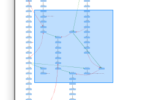

Zoom¶
There are a number of ways to zoom in/zoom out in jgvt.
Besides the menu items and toolbar buttons, one can use Use Ctrl shortcuts or Ctrl-Mouse wheel to control the zoom.
- Zoom in : Ctrl-Mouse Wheel Up, Ctrl-Plus
- Zoom out : Ctrl-Mouse Wheel Down, Ctrl-Minus
- Zoom reset : Ctrl-0
It should be noted that the zoom is from the center of the graph panel, rather than the mouse cursor.
Zoom in a Region¶
It is possible to use Ctrl-left mouse drag to select the region of interest and zoom in the region.
